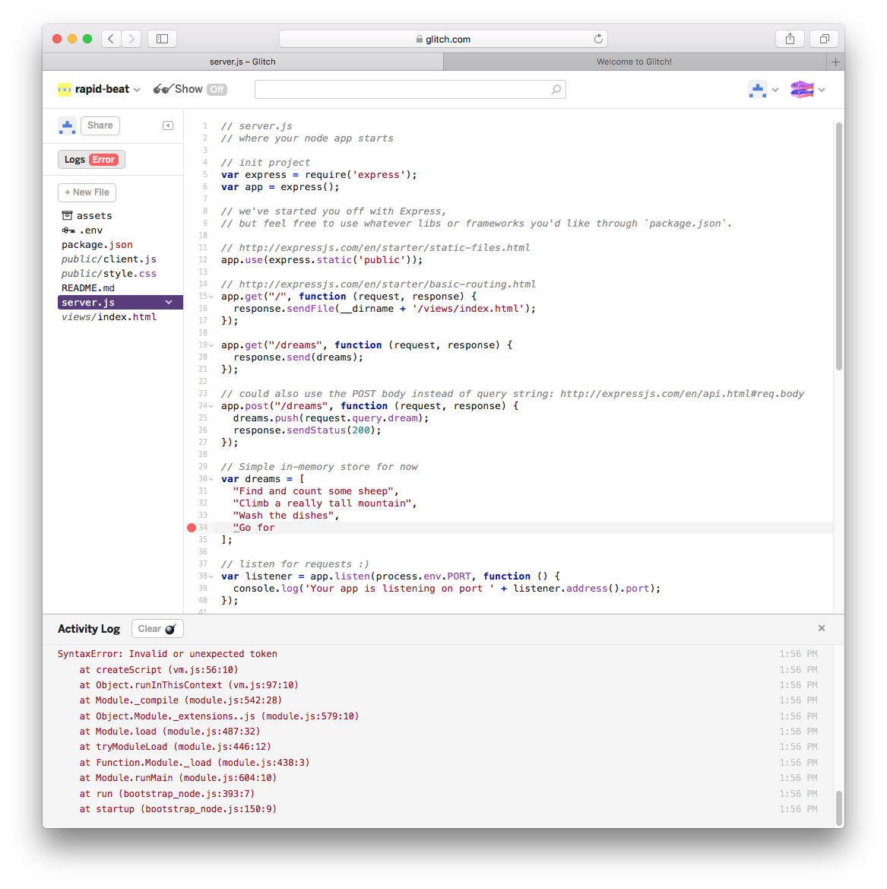
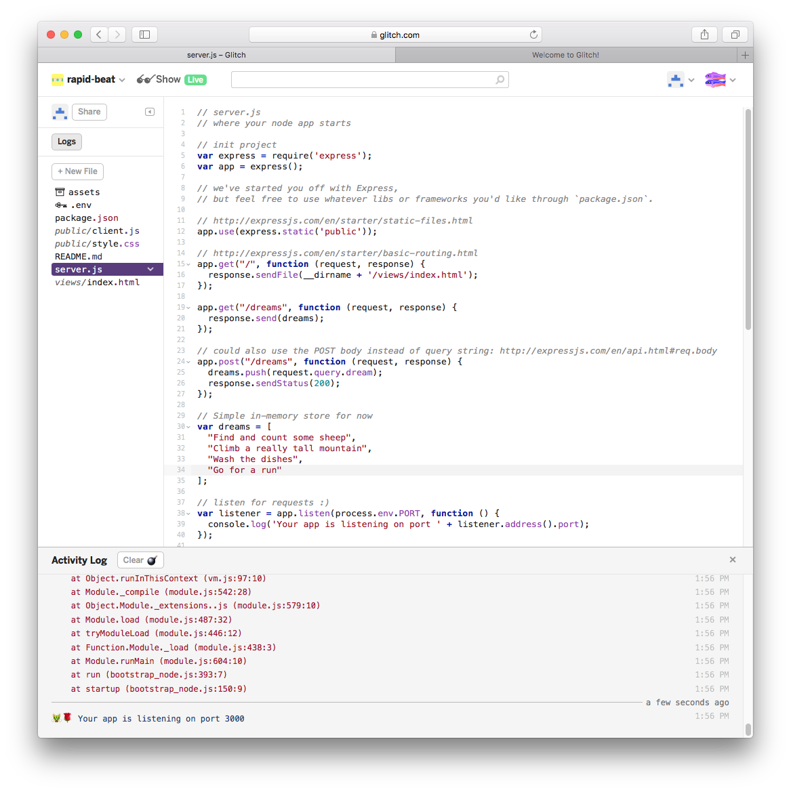
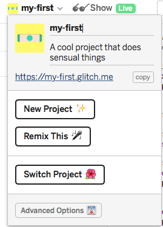
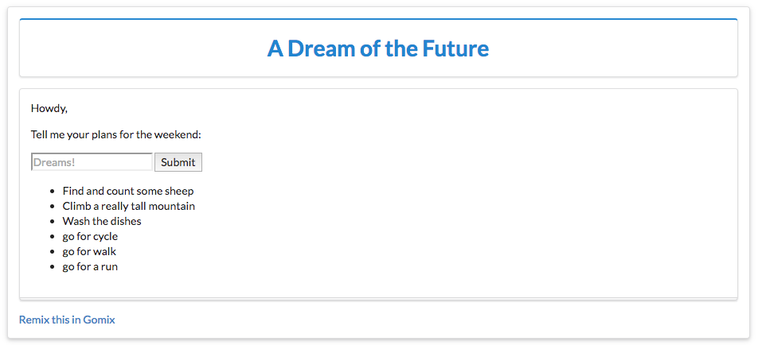

-
Objectives
Create, modify and view your first Gomix project.
-
Gomix Setup
If you do not have a github account, create one now:
Now sign up for the gomix service:
If you sign in - with your github account - Github will ask you to authorize the application:

You should then proceed to a dashboard:
Select 'Resume Coding' or perhaps 'Edit Code', and you will get to at starter project:
Press the
Showbutton and it will reveal a live version of of the app you have just created:
You can interact with this repo by entering text in the Dreams box. Also, as this app is live in the cloud - and this is your own copy of the app - you can share this link with others.
Do this now with someone also doing the lab - perhaps you can pair up with someone via the slack channel?
Verify that you each see different lists depending on what has been entered. Enter some 'dreams' into you someone else's app.
-
Project Structure and Editing
Back in the
sourceview, look at the project structure in more detail. Click on theMarkdownbutton on the top - this will switch to edit mode:You can edit this file now - it is documentation on your new app. Toggle the markdown button to switch back to preview mode.
Select each of the files in turn and have a look at the contents. The css and html content will be familiar, but js will require some javascript knowledge we have yet to develop.
Any changes we make here will be directly published live to the cloud. For instance, open
index.htmland locate the following code:<main> <p class="bold">Oh hi,</p> <p>Tell me your hopes and dreams:</p> <form> <input type="text" maxlength="100" placeholder="Dreams!"> <button type="submit">Submit</button> </form> <section class="dreams"> <ul id="dreams"> </ul> </section> </main>Make some changes to the text, eg:
<p class="bold">howdy</p> <p>Tell me your plans for the weekend:</p>Verify that the changed text appears - both for you anyone you have shared this app with.
Looking at
server.js, locate and modify some of the initial bullet items:// Simple in-memory store for now var dreams = [ "Find and count some sheep", "Climb a really tall mountain", "Wash the dishes" ];Before making changes to this data, turn on logging first by pressing the
Logsbutton.This has reconfigured the view so we can see a new panel along the end of the browser.
As you make changes to
server.js, you will see activity in this new panel.
In particular, you will see errors as you type - but if you complete a modification successfully, then the errors will be replaced with a standard
app listeningmessage:
Experiment with making small changes in
server.jsnow and keep an eye on the logs. Also, notice that if the changes you make are not correct syntax, this should be highlighted in the editor. -
Configuring the Project
The project name can be changed by directly entering a new name on the sidebar:

This will also change the project url, so if you have shared the app you will have to re-share the new url.
Another useful option is to disable the 'Refresh App on Changes' option:

Try this now. The behaviour of this feature can be a little confusing as the log may continue to report errors - but the live app itself will not be refreshed until you re enable the option.
Explore the advanced options:
Experiment with of all of these options.
For
Export to github, the repository must already exist in your account. The project will, however, be on a different branch from master, so might not be visible at first unless you switch branches. -
Run Offline
On your workstation, install Node.js:
be sure to select the
LTSversion, NOT the current versionIn the
Advanced Optionsin Glitch, selectDownload Project- Edit the file
server.js, changing the following statements:
// listen for requests :) var listener = app.listen(process.env.PORT, function () { console.log('Your app is listening on port ' + listener.address().port); });to:
// listen for requests :) const listener = app.listen(process.env.PORT || 4000, function () { console.log('Your app is listening on port ' + listener.address().port); });From a command shell, inside the project folder you just unarchived, run the following commands:
npm install npm startThe latter command should display:
> my-glitch-app@0.0.1 start /Users/edeleastar/Downloads/app > node server.js Your app is listening on port 4000If you open a browser now on http://localhost:4000 your application should be running locally:

- Edit the file
-
Exercises
Exercise 1: Semantic UI
Modify index.html to include the latest semantic ui libraries:
Step 1:
include these extra elements in the
<head>section of index:<script type="text/javascript" src="https://cdnjs.cloudflare.com/ajax/libs/jquery/3.1.1/jquery.min.js"></script> <link rel="stylesheet" href="https://cdnjs.cloudflare.com/ajax/libs/semantic-ui/2.3.1/semantic.min.css" type="text/css"> <script type="text/javascript" src="https://cdnjs.cloudflare.com/ajax/libs/semantic-ui/2.3.1/semantic.min.js"></script>Step 2:
Examine this view:

Try to modify index.html to render as above using semantic ui
container,segment,headerandformclasses.Exercise 2:
See if you can incorporate an image into the page:

This will require you to:
- locate and upload an image by dragging it to the
assetsfolder. - click on the image to acquire the image
url - insert an
<img>tag with this url into index.
Exercise 3:
If you completed the above tasks, download the the app again and run it locally (see step 4).
- locate and upload an image by dragging it to the